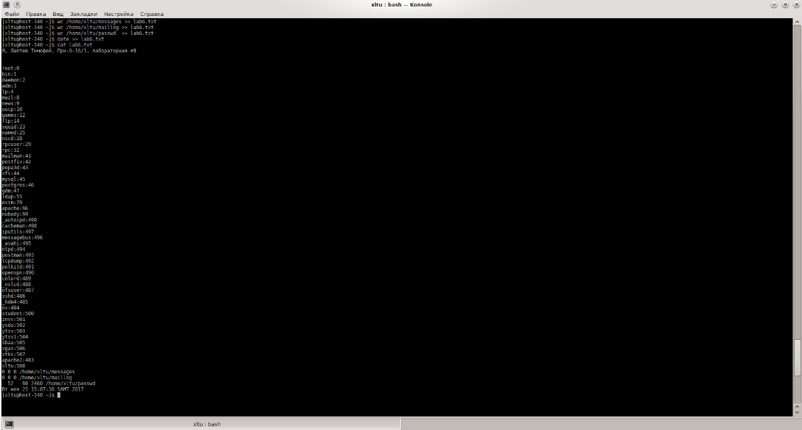

1. Открыть терминал (К → Система → Терминал ( Konsole)). После запуска терминала, в его окне появится приглашение вида
[@<имя компа>] $
2. Прежде всего, убедитесь, что вы находитесь в своём домашнем каталоге. Это можно сделать командой:
$ pwd
Если вы не в домашнем каталоге, то перейти в домащний каталог.
3. Перейти в root.
Переход в пользователя root реализуется командой su- (су тире; не забывайте про тире!).
Теперь приглашение linux будет #.
4. Выполнить команды
cp /var/log/messages messages
cp /var/log/maillog maillog
cp /etc/passwd passwd
Сделать скопированные файлы доступными обычному пользователю, тому, под которым вы зашли. Для этого нужно сменить хозяина файлов командой chown (change own — сменить хозяина). Эту команду может выполнять только root. Смотрите man chown.
5. Выйти из root.
Выход из root - .
Теперь приглашение linux снова будет $.
6. Создать файл с именем = фио (например, obama_b.txt) командой
$ touch <имя_файла>
7. Ввести в файл следующую информацию «Я, <фамилия имя отчество>, группа <группа>, лабораторная №8».
Это можно сделать командами cat, tee, echo или редактором mc.
8. Добавить в этот файл две пустых строки.
Это можно сделать командами cat, tee, echo или редактором mc.
9. Добавить в этот файл вывод следующих команд
tail messages
tail maillog
10. С помощью команды cut выделить из файла passwd первое и третье поле, вывод этой команды отсортировать по алфавиту и добавить в созданный ранее файл фио.
11. С помощью команды wc добавить в файл фио количество строк, слов и байт, содержащихся в файлах messages, maillog и passwd.
12. Добавить в этот файл дату командой «date».
13. Нажать на клавиатуре клавишу PrintScreen. В открывшемся окне программы Ksnapshot клавишей <Сохранить как . . .> сохранить скрин окна терминала (не всего экрана, а только окна терминала!) в файл laba09.jpg в свой домашний каталог. На скрине должны хорошо читаться последние ваши команды в терминале.
Порядок сдачи лабораторной.
В отчёте должно быть:
а) задание на лабу;
б) распечатка созданного файла с именем = fio;
в) распечатка скрина окна терминала с качеством, достаточным, чтобы можно было прочесть информацию в окне терминала;
г) объяснение (комментарии) проделанной работы.
По требованию преподавателя повторить работу в лаб326 и объяснить, что, собственно, делал.
